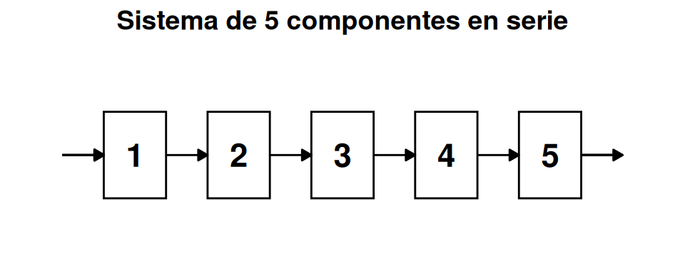
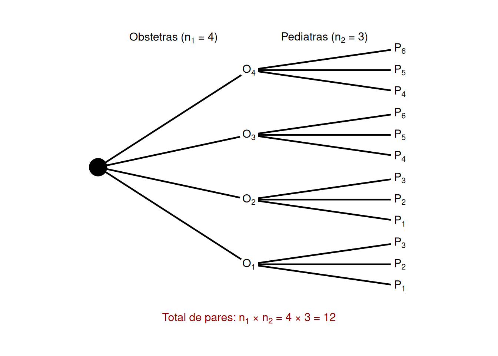
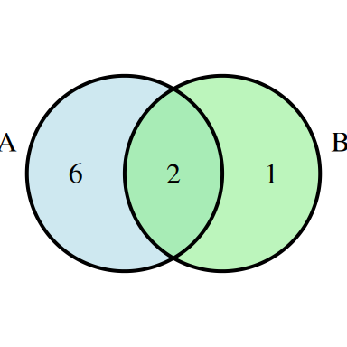
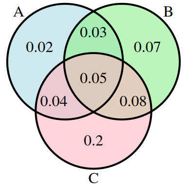
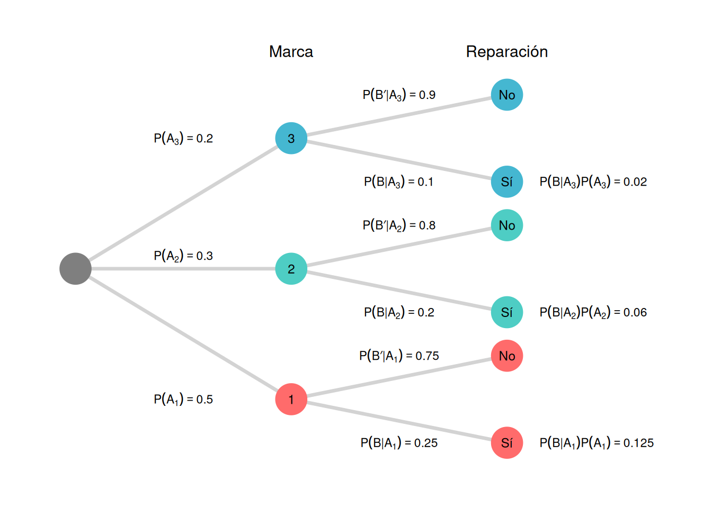
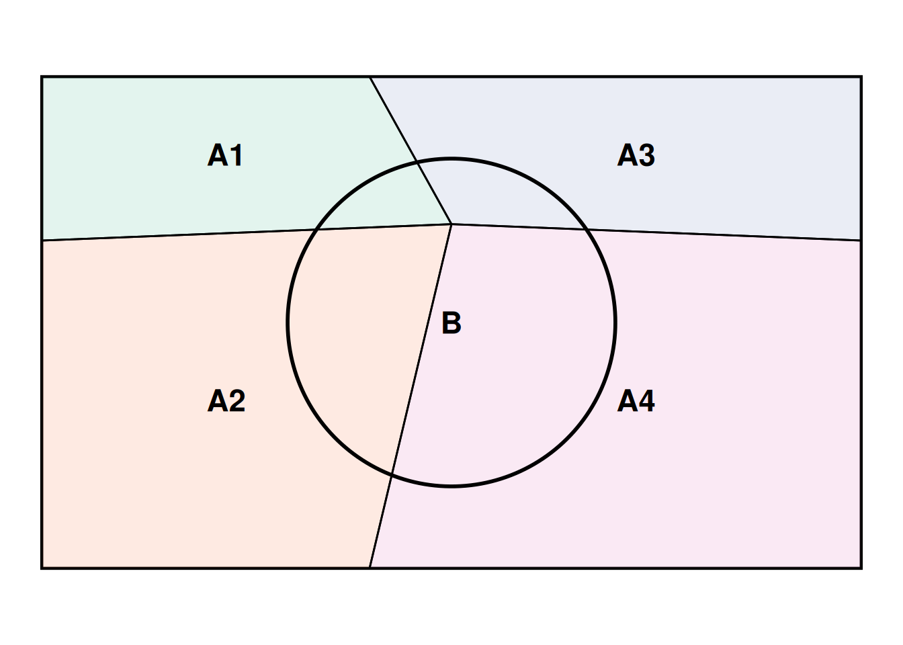
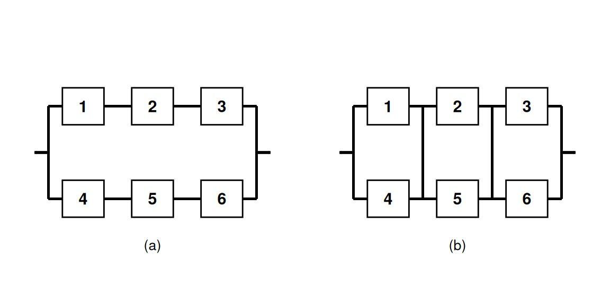

Unidad 2 Probabilidad
Los elementos de probabilidad son los conceptos fundamentales que se utilizan en la teoría de la probabilidad para describir y analizar eventos aleatorios. Algunos de ellos son: espacio muestral, eventos, función de probabilidad, variable aleatoria, distribución de probabilidad, entre otros.
Estos elementos son esenciales para el estudio de la probabilidad y su aplicación en la estadística y en muchas áreas de la ciencia, incluyendo la economía, la biología, la física, entre otras.
2.1 Experimento y Espacio muestral
En el contexto de la probabilidad, un experimento es definido como un proceso que genera resultados definidos. Y en cada una de las repeticiones del experimento, habrá uno y solo uno de los posibles resultados experimentales (Anderson et al., 2008, página 143).
Ejemplo 2.1
| Experimento | Resultado experimental |
|---|---|
| Lanzar una moneda | Cara, cruz |
| Tomar una pieza para inspeccionarla | Con defecto, sin defecto |
| Realizar una llamada de ventas | Hay compra, no hay compra |
| Lanzar un dado | 1, 2, 3, 4, 5, 6 |
| Jugar un partido de fútbol | Ganar, perder, empatar |
Al especificar todos los resultados experimentales posibles, se está definiendo el espacio muestral de un experimento. En otras palabras, el espacio muestral de un experimentos es el conjunto de todos los resultados experimentales. Se usa la letra omega mayúscula (\(\Omega\)) para referirnos a este conjunto. Un elemento genérico de \(\Omega\) se denota como \(\omega\).
Ejemplo 2.2 Conduciendo hacia su trabajo, una persona debe pasar por tres semáforos. En cada cruce la persona puede detenerse (D) o continuar (C), de acuerdo con el color de la luz. ¿Cuál es el espacio muestral del experimento?
\[\Omega = \lbrace CCC, DDD, CCD, CDD, CDC, DCD, DDC, DCC \rbrace\]
Ejercicio 2.1 Un fabricante de ropa deportiva produce pantalones deportivos en dos colores (azul y gris) y en cuatro tamaños diferentes (pequeño, mediano, grande y extra grande). ¿Cuál es el espacio muestral del experimento de elegir al azar un pantalón deportivo de la línea de producción de la empresa?
Ejercicio 2.2 Un restaurante ofrece tres opciones de menú para el almuerzo: menú A, menú B y menú C. Además, cada menú se puede pedir con carne o con pescado. ¿Cuál es el espacio muestral del experimento de elegir al azar un menú para el almuerzo en este restaurante?
Ejercicio 2.3 Una compañía de seguros de autos ofrece pólizas de seguro con dos niveles de cobertura (básico y completo) y dos tipos de franquicia (alta y baja). ¿Cuál es el espacio muestral del experimento de elegir al azar una póliza de seguro de auto de la compañía?
2.2 Eventos aleatorios
En principio, un evento aleatorio (o simplemente evento) es algún subconjunto del espacio muestral \(\Omega\). Los eventos se anotan con una letra mayúscula a elección (Anderson et al., 2008, página 153).
A modo de ejemplo, consideremos el experimento de lanzar un dado de 6 caras, por lo que el epsación muestral es \(\Omega = \lbrace 1,2,3,4,5,6 \rbrace\).
Luego, el evento correspondiente a obtener un número par está dado por:
A: obtener un número par \(\rightarrow A = \lbrace 2,4,6 \rbrace\)
Ejercicio 2.4 Experimento aleatorio: Lanzamiento de un dado. Evento aleatorio: Obtener un número impar. ¿Cuál es el conjunto correspondiente al evento aleatorio?
Ejercicio 2.5 Experimento aleatorio: Elegir una carta al azar de una baraja inglesa de 52 cartas. Evento aleatorio: Obtener una carta roja. ¿Cuál es el conjunto correspondiente al evento aleatorio?
Ejercicio 2.6 Experimento aleatorio: Lanzar dos monedas. Evento aleatorio: Obtener dos caras. ¿Cuál es el conjunto correspondiente al evento aleatorio?
Ejercicio 2.7 Experimento aleatorio: Elegir un estudiante al azar de una clase de 30 estudiantes. Evento aleatorio: Elegir a un estudiante que tenga una altura superior a 1,75 metros. ¿Cuál es el conjunto correspondiente al evento aleatorio?
Ejercicio 2.8 Experimento aleatorio: Lanzar un dardo a una diana circular (el centro y 6 sectores circulares). Evento aleatorio: Obtener un lanzamiento dentro del círculo exterior de la diana. ¿Cuál es el conjunto correspondiente al evento aleatorio?
2.3 Axiomas y propiedades
Dados un experimento y un espacio muestral \(\Omega\), el objetivo de la probabilidad es asignar a cada evento \(A\) un número \(P(A)\), llamado la probabilidad del evento \(A\), el cual dará una medida precisa de la oportunidad de que \(A\) ocurra. Para garantizar que las asignaciones serán consistentes con las nociones intuitivas de la probabilidad, todas las asignaciones deberán satisfacer los siguientes axiomas (propiedades básicas) de probabilidad.
Para cualquier evento \(A\), \(P(A) \geq 0\).
\(P(\Omega) = 1\).
Si \(A_{1}, A_{2}, A_{3}, \ldots\) es un conjunto de eventos mutuamente excluyentes, entonces
\[ P(A_{1} \cup A_{2} \cup A_{3} \cup \cdots) = \sum_{i=1}^{\infty} P(A_{i}) \]
Se podría preguntar por qué el tercer axioma no contiene ninguna referencia a un conjunto finito de eventos mutuamente excluyentes. Es porque la propiedad correspondiente para un conjunto finito puede ser derivada de los tres axiomas. Se pretende que la lista de axiomas sea tan corta como sea posible y que no contenga alguna propiedad que pueda ser derivada de los demás que aparecen en la lista. El axioma 1 refleja la noción intuitiva de que la probabilidad de que ocurra \(A\) deberá ser no negativa. El espacio muestral es por definición el evento que debe ocurrir cuando se realiza el experimento (\(S\) contiene todos los posibles resultados), así se dice el axioma 2 que es la máxima probabilidad posible de 1 está asignada a \(S\). El tercer axioma formaliza la idea que si se desea la probabilidad de que ocurra al menos uno de varios eventos, y no ocurran dos al mismo tiempo, entonces la probabilidad de que por lo menos uno ocurra es la suma de las probabilidades de los eventos individuales. (Devore, 2008, página 52)
Definición 2.1 (Complemento de un evento) Dado un evento \(A\), el complemento de \(A\) se define como el evento que consta de todos los casos muestrales que no están en \(A\), y se denota por \(A^c\). Por ejemplo, si consideramos el experimento de lanzar el dado, y el evento de obtener un número par (\(A\)), entonces, el complemento corresponde a obtener un número que no sea par (\(A^c\)). De lo anterior se tiene que
\[\begin{equation} P(A) + P(A^c) = 1 \tag{2.1} \end{equation}\]Ejemplo 2.3 Considere el caso de un administrador de ventas que, después de revisar los informes de ventas, encuentra que el 80% de los contactos con clientes nuevos no producen ninguna venta. Si \(A\) denota el evento hubo venta, entonces \(A^c\) corresponde al evento de no hubo venta. Si el administrador tiene que \(P(A') = 0.8\), mediante la ecuación (2.1) se ve que
\[P(A) = 1 - P(A') = 1 - 0.8 = 0.2\]
La conclusión es que la probabilidad de una venta en el contacto con un cliente nuevo es de 0.2.
Definición 2.2 (Unión de dos eventos) La unión de dos eventos \(A\) y \(B\) es el evento que contiene todos los casos muestrales que pertenecen a \(A\) o \(B\) o ambos. La unión se denota \(A \cup B\).
Definición 2.3 (Intersección de dos eventos) Dados dos eventos \(A\) y \(B\), la intersección de \(A\) y \(B\) es el evento que contiene los casos muestrales que pertenecen tanto a \(A\) como a \(B\). La intersección se denota \(A \cap B\).
Definición 2.4 (Eventos mutuamente excluyentes) Se dice que dos eventos son mutuamente excluyentes si, cuando un evento ocurre, el otro no puede ocurrir. Por lo tanto, para que A y B sean mutuamente excluyentes, se requiere que su intersección sea nula, es decir,
\[\begin{equation} \text{Si } A \cap B = \emptyset \text{, entonces, } P(A \cap B) = 0. \tag{2.2} \end{equation}\]Proposición 2.1 (Propiedad) \(P(\emptyset) = 0\) donde \(\emptyset\) es el evento nulo (el evento que no contiene resultados en absoluto). Esto a su vez implica que la propiedad contenida en el axioma 3 es válida para un conjunto de eventos.
Solución. Primero considérese el conjunto infinito \(A_{1} = \emptyset, A_{2} = \emptyset, A_{3} = \emptyset, \dots\). Como \(\emptyset \cap \emptyset = \emptyset\), los eventos en este conjunto son disjuntos y \(\bigcup A_{i} = \emptyset\). El tercer axioma da entonces
\[ P(\emptyset) = \sum P(\emptyset) \]
Esto puede suceder sólo si \(P(\emptyset) = 0\).
Ahora supongamos que \(A_{1}, A_{2}, \dots, A_{k}\) son eventos disjuntos y anexemos a estos el conjunto finito \(A_{k+1} = \emptyset, A_{k+2} = \emptyset, A_{k+3} = \emptyset, \dots\). De nuevo si se invoca el tercer axioma:
\[ P\bigg(\bigcup_{i=1}^{k} A_{i}\bigg) = P\bigg(\bigcup_{i=1}^{\infty} A_{i}\bigg) = \sum_{i=1}^{\infty} P(A_{i}) = \sum_{i=1}^{k} P(A_{i}) \]
como se deseaba.
Proposición 2.2 (Propiedad) Para cualquier evento \(A\), \(P(A) + P(A') = 1\), a partir de la cual \(P(A) = 1 - P(A')\).
Solución. En el axioma 3, sea \(k = 2\), \(A_{1} = A\) y \(A_{2} = A'\). Como por definición de \(A'\), \(A \cup A' = S\) en tanto \(A\) y \(A'\) sean eventos disjuntos, \(1 = P(S) = P(A \cup A') = P(A) + P(A')\).
Esta proposición es sorprendentemente útil porque se presentan muchas situaciones en las cuales \(P(A')\) es más fácil de obtener mediante métodos directos que \(P(A)\). En general, es útil cuando el evento de interés puede ser expresado por lo menos…, puesto que en ese caso puede ser más fácil trabajar con el complemento menos que … (en algunos problemas es más fácil trabajar con más que … que con cuando). Cuando se tenga dificultad al calcular \(P(A)\) directamente, habrá que pensar en determinar \(P(A')\).
Ejemplo 2.4 Considere un sistema de cinco componentes idénticos conectados en serie, como se ilustra en la figura:

Denote un componente que falla por \(F\) y uno que no lo hace por \(E\) (éxito). Sea \(A\) el evento en que el sistema falla. Para que ocurra \(A\), por lo menos uno de los componentes individuales debe fallar. Los resultados en \(A\) incluyen EEFEE (1, 2, 4 y 5 funcionarán, pero 3 no), FFEEE, y así sucesivamente. Existen de hecho 31 resultados diferentes en \(A\). Sin embargo, \(A'\), el evento en que el sistema funciona, consiste en el resultado único EEEEE. En la secciones posteriores se verá que si 90% de todos estos componentes no fallan y diferentes componentes lo hacen independientemente uno de otro, entonces \(P(A') = P(EEEEE) = 0.9^{5} = 0.59\). Así pues \(P(A) = 1 - 0.59 = 0.41\); por lo tanto, entre un gran número de sistemas como ése, aproximadamente 41% fallarán.
Proposición 2.3 (Propiedad) Para cualquier evento \(A\), \(P(A) \leq 1\).
Solución. Esto se debe a que \(1 = P(A) + P(A') \geq P(A)\) puesto que \(P(A') \geq 0\). Cuando los eventos \(A\) y \(B\) son mutuamente excluyentes, \(P(A \cup B) = P(A) + P(B)\). Para eventos que no son mutuamente excluyentes, la adición de \(P(A)\) y \(P(B)\) da por resultado un ``doble conteo’’ de los resultados en la intersección. El siguiente resultado muestra cómo corregir esto.
Proposición 2.4 (Propiedad) Para dos eventos cualesquiera \(A\) y \(B\):
\[ P(A \cup B) = P(A) + P(B) - P(A \cap B) \]
Solución. Obsérvese primero que \(A \cup B\) puede ser descompuesto en dos eventos excluyentes, \(A\) y \(B \cap A'\); la última es la parte \(B\) que queda afuera de \(A\). Además, \(B\) por sí mismo es la unión de los dos eventos excluyentes \(A \cap B\) y \(A' \cap B\), por lo tanto \(P(B) = P(A \cap B) + P(A' \cap B)\). Por lo tanto
\[\begin{equation} \notag \begin{split} P(A \cup B) &= P(A) + P(B \cap A') \\ &= P(A) + [P(B) - P(A \cap B)] \\ &= P(A) + P(B) - P(A \cap B) \end{split} \end{equation}\]Ejemplo 2.5 En cierto suburbio residencial, 60% de las familias se suscriben al periódico en una ciudad cercana, 80% lo hacen al periódico local y 50% de todas las familias a ambos periódicos. Si se elige una familia al azar, ¿cuál es la probabilidad de que se suscriba a (1) por lo menos a uno de los dos periódicos y (2) exactamente a uno de los dos periódicos?
Con \(A = \{\text{se suscribe al periódico metropolitano}\}\) y \(B = \{\text{se suscribe al periódico local}\}\), la información dada implica que \(P(A) = 0.6\), \(P(B) = 0.8\) y \(P(A \cap B) = 0.5\). La proposición precedente ahora lleva a
\[\begin{equation} \notag \begin{split} P(\text{se suscribe a por lo menos uno de los dos periódicos}) &= P(A \cup B)\\ &= P(A) + P(B) - P(A \cap B)\\ &= 0.6 + 0.8 - 0.5 = 0.9 \end{split} \end{equation}\]El evento en que una familia se suscribe a sólo el periódico local se escribe como \(A' \cap B\) [() y local]. Ahora la figura 2.4 implica que
\[ 0.9 = P(A \cup B) = P(A) + P(A' \cap B) = 0.6 + P(A' \cap B) \]
a partir de la cual \(P(A' \cap B) = 0.3\). Asimismo \(P(A \cap B') = P(A \cup B) - P(B) = 0.1\). Todo esto se ilustra en la figura 2.5, donde se ve que
\[ P(\text{exactamente uno}) = P(A \cap B') + P(A' \cap B) = 0.1 + 0.3 = 0.4 \]
2.3.1 Resultados igualmente probables
En muchos experimentos compuestos de \(N\) resultados, es razonable asignar probabilidades iguales a los \(N\) eventos simples. Estos incluyen ejemplos tan obvios como lanzar al aire una moneda o un dado imparciales una o dos veces (o cualquier número fijo de veces) o seleccionar una o varias cartas de un mazo bien barajado de 52 cartas. Con \(p = P(E_{i})\) por cada \(i\),
\[ 1 = \sum_{i=1}^{N} P(E_{i}) = \sum_{i=1}^{N} p = p \cdot N \qquad \text{por lo tanto } p = \frac{1}{N} \]
Es decir, si existen \(N\) resultados igualmente probables, la probabilidad de cada uno es \(1/N\).
Ahora considérese un evento \(A\), con \(N(A)\) como el número de resultados contenidos en \(A\). Entonces
\[ P(A) = \sum_{E_{i} \text{ en } A} P(E_{i}) = \sum_{E_{i} \text{ en } A} \frac{1}{N} = \frac{N(A)}{N} \]
Por lo tanto, cuando los resultados son igualmente probables, el cálculo de probabilidades se reduce a contar: determinar tanto el número de resultados \(N(A)\) en \(A\) como el número de resultados \(N\) en \(S\) y formar su relación.
Ejemplo 2.6 Cuando dos dados se lanzan por separado, existen \(N = 36\) resultados (elimine la primera fila y la primera columna de la tabla del ejemplo 2.3). Si ambos dados son imparciales, los 36 resultados son igualmente probables, por lo tanto \(P(E_{i}) = \frac{1}{36}\). Entonces el evento \(A = \{\text{suma de dos números} = 7\}\) consta de seis resultados \((1, 6)\), \((2, 5)\), \((3, 4)\), \((4, 3)\), \((5, 2)\) y \((6, 1)\), por lo tanto
\[ P(A) = \frac{N(A)}{N} = \frac{6}{36} = \frac{1}{6} \]
Ejercicio 2.9 En una tienda de ropa hay 10 camisas rojas, 15 camisas azules y 20 camisas verdes. ¿Cuál es la probabilidad de que al escoger una camisa al azar, sea de color verde?
Ejercicio 2.10 En un mercado hay 200 vendedores, de los cuales el 70% son hombres y el 30% son mujeres. Si se elige al azar un vendedor, ¿cuál es la probabilidad de que sea mujer?
Ejercicio 2.11 Una compañía de fondos de inversión mutua ofrece a sus clientes varios fondos diferentes: un fondo de mercado de dinero, tres fondos de bonos (a corto, intermedio y a largo plazo), dos fondos de acciones (de moderado y alto riesgo) y un fondo balanceado. Entre los clientes que poseen acciones en un solo fondo, los porcentajes de clientes en los diferentes fondos son como sigue:
- Mercado de dinero 20%.
- Acciones de alto riesgo 18%.
- Bonos a corto plazo 15%
- Acciones de riesgo moderado 25%.
- Bonos a plazo intermedio 10%
- Balanceadas 7%.
- Bonos a largo plazo 5%.
Se selecciona al azar un cliente que posee acciones en sólo un fondo.
¿Cuál es la probabilidad de que el individuo seleccionado posea acciones en el fondo balanceado?
¿Cuál es la probabilidad de que el individuo posea acciones en un fondo de bonos?
¿Cuál es la probabilidad de que el individuo seleccionado no posea acciones en un fondo de acciones?
Ejercicio 2.12 Una firma consultora de computación presentó propuestas en tres proyectos. Sea \(A_i = \{ \text{proyecto otorgado } i \}\), con \(i = 1, 2, 3\) y suponga que \(P(A_1) = 0.22\), \(P(A_2) = 0.25\), \(P(A_3) = 0.28\), \(P(A_1 \cap A_2) = 0.11\), \(P(A_1 \cap A_3) = 0.05\), \(P(A_2 \cap A_3) = 0.07\), \(P(A_1 \cap A_2 \cap A_3) = 0.01\). Exprese en palabras cada uno de los siguientes eventos y calcule la probabilidad de cada uno:
- \(A_1 \cup A_2\)
- \(A_1' \cap A_2'\). Sugerencia: \((A_1 \cup A_2)' = A_1' \cap A_2'\)
- \(A_1 \cup A_2 \cup A_3\)
- \(A_1' \cap A_2' \cap A_3'\)
- \(A_1' \cap A_2' \cap A_3\)
- \((A_1' \cap A_2') \cup A_3\)
2.4 Técnicas de conteo
Cuando los diversos resultados de un experimento son igualmente probables (la misma probabilidad es asignada a cada evento simple), la tarea de calcular probabilidades se reduce a contar. Sea \(N\) el número de resultados en un espacio muestral y \(N(A)\) el número de resultados contenidos en un evento \(A\). (Devore, 2008, página 59)
\[\begin{equation} P(A) = \frac{N(A)}{N} \tag{2.3} \end{equation}\]Si una lista de resultados es fácil de obtener y \(N\) es pequeño, entonces \(N\) y \(N(A)\) pueden ser determinadas sin utilizar ningún principio de conteo.
Existen, sin embargo, muchos experimentos en los cuales el esfuerzo implicado al elaborar la lista es prohibitivo porque \(N\) es bastante grande. Explotando algunas reglas de conteo generales, es posible calcular probabilidades de la forma (2.3) sin una lista de resultados. Estas reglas también son útiles en muchos problemas que implican resultados que no son igualmente probables. Se utilizarán varias de las reglas desarrolladas aquí al estudiar distribuciones de probabilidad en el siguiente capítulo.
2.4.1 Regla del producto para pares ordenados
La primera regla de conteo se aplica a cualquier situación en la cual un conjunto (evento) se compone de pares de objetos ordenados y se desea contar el número de pares. Por par ordenado, se quiere decir que, si \(O_1\) y \(O_2\) son objetos, entonces el par \((O_1, O_2)\) es diferente del par \((O_2, O_1)\). Por ejemplo, si un individuo selecciona una línea aérea para un viaje de Los Ángeles a Chicago y (después de realizar transacciones de negocios en Chicago) un segundo para continuar a Nueva York, una posibilidad es (American, United), otra es (United, American) y otra más es (United, United).
Proposición 2.5 (Regla del producto para pares ordenados) Si el primer elemento u objeto de un par ordenado puede ser seleccionado de \(n_1\) maneras y por cada una de estas \(n_1\) maneras el segundo elemento del par puede ser seleccionado de \(n_2\) maneras, entonces el número de pares es \(n_1 \cdot n_2\).
Ejemplo 2.7 El propietario de una casa que va a llevar a cabo una remodelación requiere los servicios tanto de un contratista de fontanería como de un contratista de electricidad. Si existen 12 contratistas de fontanería y 9 contratistas electricistas disponibles en el área, ¿de cuántas maneras pueden ser elegidos los contratistas? Sean \(P_1, \ldots, P_{12}\) los fontaneros y \(Q_1, \ldots, Q_9\) los electricistas, entonces se desea el número de pares de la forma \((P_i, Q_j)\). Con \(n_1 = 12\) y \(n_2 = 9\), la regla de producto da \(N = (12)(9) = 108\) formas posibles de seleccionar los dos tipos de contratistas.
En el ejemplo 2.7, la selección del segundo elemento del par no dependió de qué primer elemento ocurrió o fue elegido. En tanto exista el mismo número de opciones del segundo elemento por cada primer elemento, la regla de producto es válida incluso cuando el conjunto de posibles segundos elementos depende del primer elemento.
Ejemplo 2.8 Una familia se acaba de cambiar a una nueva ciudad y requiere los servicios tanto de un obstetra como de un pediatra. Existen dos clínicas médicas fácilmente accesibles y cada una tiene dos obstetras y tres pediatras. La familia obtendría los máximos beneficios del seguro de salud si se une a la clínica y selecciona ambos doctores de la clínica. ¿De cuántas maneras se puede hacer esto? Denote los obstetras por \(O_1, O_2, O_3\) y \(O_4\) y los pediatras por \(P_1, \ldots, P_6\). Entonces se desea el número de pares \((O_i, P_j)\) para los cuales \(O_i\) y \(P_j\) están asociados con la misma clínica. Como existen cuatro obstetras, \(n_1 = 4\), y por cada uno existen tres opciones de pediatras, por lo tanto \(n_2 = 3\). Aplicando la regla de producto se obtienen \(N = n_1 n_2 = 12\) posibles opciones.
En muchos problemas de conteo y probabilidad, se puede utilizar una configuración conocida como diagrama de árbol para representar pictóricamente todas las posibilidades. El diagrama de árbol asociado con el ejemplo 2.8 aparece en la figura 2.1. Partiendo de un punto localizado en el lado izquierdo del diagrama, por cada posible primer elemento de un par emana un segmento de línea recta hacia la derecha. Cada una de estas líneas se conoce como rama de primera generación. Ahora para cualquier rama de primera generación se construye otro segmento de línea que emana de la punta de la rama por cada posible opción de un segundo elemento del par. Cada segmento de línea es una rama de segunda generación. Como existen cuatro obstetras, existen cuatro ramas de primera generación y tres pediatras por cada obstetra se obtienen tres ramas de segunda generación que emanan de cada rama de primera generación.

Figura 2.1: Diagrama de árbol
Generalizando, supóngase que existen \(n_{1}\) ramas de primera generación y por cada rama de primera generación existen \(n_{2}\) ramas de segunda generación. El número total de ramas de segunda generación es entonces \(n_{1}n_{2}\). Como el extremo de cada rama de segunda generación corresponde a exactamente un posible par (la selección de un primer elemento y luego de un segundo nos sitúa en el extremo de exactamente una rama de segunda generación), existen \(n_{1}n_{2}\) pares, lo que verifica la regla de producto.
La construcción de un diagrama de árbol no depende de tener el mismo número de ramas de segunda generación que emanen de cada rama de primera generación. Si la segunda clínica tuviera cuatro pediatras, entonces habría sólo tres ramas que emanan de dos de las ramas de primera generación y cuatro que emanan de cada una de las otras dos ramas de primera generación. Un diagrama de árbol puede ser utilizado por lo tanto para representar pictóricamente experimentos aparte de aquellos a los que se aplica la regla de producto.
Si se lanza al aire un dado de seis lados cinco veces en sucesión en lugar de sólo dos veces, entonces cada posible resultado es un conjunto ordenado de cinco números tal como \((1, 3, 1, 2, 4)\) o \((6, 5, 2, 2, 2)\). Un conjunto ordenado de \(k\) objetos recibirá el nombre de \(k\)-tupla (por tanto un par es un 2-tupla y un triple es un 3-tupla). Cada resultado del experimento del lanzamiento al aire del dado es entonces un 5-tupla.
Definición 2.5 (Regla del producto más general) Supóngase que un conjunto se compone de conjuntos ordenados de \(k\) elementos (\(k\)-tuplas) y que existen \(n_1\) posibles opciones para el primer elemento; por cada opción del primer elemento, existen \(n_2\) posibles opciones del segundo elemento, y así sucesivamente; finalmente existen \(n_k\) opciones del elemento \(k\)-ésimo. Existen entonces \(n_1n_2 \cdots n_k\) posibles \(k\)-tuplas.
Esta regla más general también puede ser ilustrada por un diagrama de árbol; simplemente se construye un diagrama más elaborado añadiendo una tercera generación de ramas que emanan de la punta de cada segunda generación, luego ramas de cuarta generación, y así sucesivamente, hasta que por último se agregan ramas de \(k\)-ésima generación.
2.4.2 Permutaciones y combinaciones
Considérese un grupo de \(n\) individuos u objetos distintos (“distintos” significa que existe alguna característica que diferencia a cualquier individuo u objeto de cualquier otro). ¿Cuántas maneras existen de seleccionar un subconjunto de tamaño \(k\) del grupo? Por ejemplo, si un equipo de ligas menores tiene 15 jugadores registrados, ¿cuántas maneras existen de seleccionar 9 jugadores para una alineación inicial? O si en su librero tiene 10 libros de misterio no leídos y desea seleccionar 3 para llevarlos consigo en unas vacaciones cortas, ¿cuántas maneras existen de hacerlo? (Devore, 2008, página 62)
Una respuesta a la pregunta general que se acaba de plantear requiere distinguir entre dos casos. En algunas situaciones, tal como el escenario del béisbol, el orden de la selección es importante. Por ejemplo, con Angela como lanzador y Ben como receptor se obtiene una alineación diferente de aquella con Angela como receptor y Ben como lanzador. A menudo, sin embargo, el orden no es importante y a nadie le interesa qué individuos u objetos son seleccionados, como sería el caso en el escenario de selección de libros.
Definición 2.6 (Permutación) Un subconjunto ordenado se llama permutación. El número de permutaciones de tamaño \(k\) que se puede formar con los \(n\) individuos u objetos en un grupo será denotado por \(P_{k,n}\).
Definición 2.7 (Combinación) Un subconjunto no ordenado se llama combinación. Una forma de denotar el número de combinaciones es \(C_{k,n}\), pero en su lugar se utilizará una notación que es bastante común en libros de probabilidad: \(\binom{n}{k}\), que se lee “de \(n\) se eligen \(k\)”.
El número de permutaciones se determina utilizando la primera regla de conteo para \(k\)-tuplas. Supongase, por ejemplo, que un colegio de ingeniería tiene siete departamentos, denotados por \(a\), \(b\), \(c\), \(d\), \(e\), \(f\) y \(g\). Cada departamento tiene un representante en el consejo de estudiantes del colegio. De estos siete representantes, uno tiene que ser elegido como presidente, otro como vicepresidente y un tercero como secretario. ¿Cuántas maneras existen para seleccionar los tres oficiales? Es decir, ¿cuántas permutaciones de tamaño 3 pueden ser formadas con los 7 representantes? Para responder esta pregunta, habrá que pensar en formar una tripleta (3-tupla) en la cual el primer elemento es el presidente, el segundo es el vicepresidente y el tercero es el secretario. Una tripleta es (\(a\), \(g\), \(b\)), otra es (\(b\), \(g\), \(a\)) y otra más es (\(d\), \(f\), \(b\)). Ahora bien el presidente puede ser seleccionado en cualesquiera de \(n_1 = 7\) formas. Por cada forma de seleccionar el presidente, existen \(n_2 = 6\) formas de seleccionar el vicepresidente y por consiguiente \(7 \times 6 = 42\) (pares de presidente, vicepresidente). Por último, por cada forma de seleccionar un presidente y vicepresidente, existen \(n_3 = 5\) formas de seleccionar el secretario. Esto da
\[ P_{3,7} = (7)(6)(5) = 210 \]
como el número de permutaciones de tamaño 3 que se pueden formar con 7 individuos distintos. Una representación de diagrama de árbol mostraría tres generaciones de ramas.
La expresión para \(P_{3,7}\) puede ser rescrita con la ayuda de notación factorial. Recuérdese que 7! (se lee “factorial de 7”) es una notación compacta para el producto descendente de enteros \((7)(6)(5)(4)(3)(2)(1)\). Más generalmente, para cualquier entero positivo \(m\), \(m! = m(m-1)(m-2)\cdot\cdots\cdot(2)(1)\). Esto da \(1! = 1\) y también se define \(0! = 1\). Entonces
\[ P_{3,7} = (7)(6)(5) = \frac{(7)(6)(5)(4!)}{(4!)} = \frac{7!}{4!} \]
Más generalmente
\[ P_{k,n} = n(n-1)(n-2)\cdot\cdots\cdot(n-(k-2))(n-(k-1)) \]
Multiplicando y dividiendo esta por \((n-k)!\) se obtiene una expresión compacta para el número de permutaciones.
\[\begin{equation} P_{k,n} = \frac{n!}{(n-k)!} \tag{2.4} \end{equation}\]Ejemplo 2.9 Existen diez asistentes de profesor disponibles para calificar exámenes en un curso de cálculo en una gran universidad. El primer examen se compone de cuatro preguntas y el profesor desea seleccionar un asistente diferente para calificar cada pregunta (sólo un asistente por pregunta). ¿De cuántas maneras se pueden elegir los asistentes para calificar? En este caso \(n =\) tamaño del grupo \(= 10\) y \(k =\) tamaño del subconjunto \(= 4\). El número de permutaciones es
\[ P_{4,10} = \frac{10!}{(10-4)!} = \frac{10!}{6!} = 10(9)(8)(7) = 5040 \]
Es decir, el profesor podría aplicar 5040 exámenes diferentes de cuatro preguntas sin utilizar la misma asignación de calificadores a preguntas, ¡tiempo en el cual todos los asistentes seguramente habrán terminado sus programas de licenciatura!
De manera similar, hay \(3! = 6\) maneras para ordenar la combinación \(b\), \(c\), \(e\) para producir permutaciones y de hecho hay 3! modos para ordenar cualquier combinación particular de tamaño 3 para producir permutaciones. Esto implica la siguiente relación entre el número de combinaciones y el número de permutaciones.
\[ P_{3,7} = (3!) \cdot \binom{7}{3} \Rightarrow \binom{7}{3} = \frac{P_{3,7}}{3!} = \frac{7!}{(3!)(4!)} = \frac{(7)(6)(5)}{(3)(2)(1)} = 35 \]
No sería difícil poner en lista las 35 combinaciones, pero no hay necesidad de hacerlo si sólo interesa cuántas son. Obsérvese que el número 210 de permutaciones excede por mucho el número de combinaciones; el segundo es más pequeño que el primero por un factor de 3! puesto que así es como cada combinación puede ser ordenada.
Generalizando la línea de razonamiento anterior se obtiene una relación simple entre el número de permutaciones y el número de combinaciones que produce una expresión concisa para la última cantidad.
\[\begin{equation} \binom{n}{k} = \frac{P_{k,n}}{k!} = \frac{n!}{k!(n-k)!} \tag{2.5} \end{equation}\]Nótese que \(\binom{n}{n} = 1\) y \(\binom{n}{0} = 1\) puesto que hay sólo una forma de seleccionar un conjunto de (todos) \(n\) elementos o de ningún elemento y \(\binom{n}{1} = n\) puesto que existen \(n\) subconjuntos de tamaño 1.
Ejemplo 2.10 Una mano de bridge se compone de 13 cartas seleccionadas de entre un mazo de 52 cartas sin importar el orden. Existen \(\binom{52}{13} = \frac{52!}{13!39!}\) manos de bridge diferentes, lo que asciende a aproximadamente 635 000 millones. Como existen 13 cartas de cada palo, el número de manos compuestas por completo de tréboles y/o espadas (nada de cartas rojas) es \(\binom{26}{13} = \frac{26!}{13!13!} = 10\,400\,600\). Una de estas manos \(\binom{26}{13}\) se compone por completo de espadas y una se compone por completo de tréboles, por lo tanto existen \(\left[\binom{26}{13} - 2\right]\) manos compuestas por completo de tréboles y espadas con ambos palos representados en la mano. Supóngase que una mano de bridge repartida de un mazo bien barajado (es decir, 13 cartas se seleccionan al azar de entre 52 posibilidades) y si
\[\begin{equation} \notag \begin{split} A &= \{\text{la mano se compone por completo de espadas y tréboles} \\ & \text{con ambos palos representados}\} \\ B &= \{\text{la mano se compone de exactamente dos palos}\} \end{split} \end{equation}\]Los \(N = \binom{52}{13}\) posibles resultados son igualmente probables, por lo tanto
\[ P(A) = \frac{N(A)}{N} = \frac{\binom{26}{13} - 2}{\binom{52}{13}} = 0.0000164 \]
Como existen \(\binom{4}{2} = 6\) combinaciones compuestas de dos palos, de las cuales espadas y tréboles es una de esas combinaciones,
\[ P(B) = \frac{6\left[\binom{26}{13} - 2\right]}{\binom{52}{13}} = 0.0000983 \]
Es decir, una mano compuesta por completo de cartas de exactamente dos de los cuatro palos ocurrirá aproximadamente una vez por cada 100 000 manos. Si juega bridge sólo una vez al mes, es probable que nunca le repartan semejante mano.
Ejemplo 2.11 El almacén de una universidad recibió 25 impresoras, de las cuales 10 son impresoras láser y 15 son modelos de inyección de tinta. Si 6 de estas 25 se seleccionan al azar para que las revise un técnico particular, ¿cuál es la probabilidad de que exactamente 3 de las seleccionadas sean impresoras láser (de modo que las otras 3 sean de inyección de tinta)?
Sea \(D_3 = \{\text{exactamente 3 de las 6 seleccionadas son impresoras láser}\}\). Suponiendo que cualquier conjunto particular de 6 impresoras es tan probable de ser elegido como cualquier otro conjunto de 6, se tienen resultados igualmente probables, por lo tanto \(P(D_3) = N(D_3)/N\), donde \(N\) es el número de formas de elegir 6 impresoras de entre las 25 y \(N(D_3)\) es el número de formas de elegir 3 impresoras láser y 3 de inyección de tinta. Por lo tanto \(N = \binom{25}{6}\). Para obtener \(N(D_3)\), primero se piensa en elegir 3 de las 10 impresoras láser y luego 3 de las 15 impresoras de inyección de tinta. Existen \(\binom{10}{3}\) formas de elegir las 3 impresoras láser y \(\binom{15}{3}\) formas de elegir las 3 impresoras de inyección de tinta; \(N(D_3)\) es ahora el producto de estos dos números (visualícese un diagrama de árbol, en realidad aquí se está utilizando el argumento de la regla de producto), por lo tanto
\[ P(D_3) = \frac{N(D_3)}{N} = \frac{\binom{15}{3}\binom{10}{3}}{\binom{25}{6}} = \frac{\frac{15!}{3!12!} \cdot \frac{10!}{3!7!}}{\frac{25!}{6!19!}} = 0.3083 \]
Sea \(D_4 = \{\) exactamente 4 de las 6 impresoras seleccionadas son impresoras de inyección de tinta \(\}\) y defínanse \(D_5\) y \(D_6\) del mismo modo. Entonces la probabilidad de seleccionar por lo menos 3 impresoras de inyección de tinta es
\[ P(D_3 \cup D_4 \cup D_5 \cup D_6) = P(D_3) + P(D_4) + P(D_5) + P(D_6) \]
\[ = \frac{\binom{15}{3}\binom{10}{3}}{\binom{25}{6}} + \frac{\binom{15}{4}\binom{10}{2}}{\binom{25}{6}} + \frac{\binom{15}{5}\binom{10}{1}}{\binom{25}{6}} + \frac{\binom{15}{6}\binom{10}{0}}{\binom{25}{6}} = 0.8530 \]
Ejercicio 2.13 Con fecha de abril de 2006, aproximadamente 50 millones de nombres de dominio web.com fueron registrados (por ejemplo, yahoo.com).
¿Cuántos nombres de dominio compuestos de exactamente dos letras pueden ser formados? ¿Cuántos nombres de dominio de dos letras existen si como caracteres se permiten dígitos y letras? [Nota: Una longitud de carácter de tres o más ahora es obligatoria.]
¿Cuántos nombres de dominio existen compuestos de tres letras en secuencia? ¿Cuántos de esta longitud existen si se permiten letras o dígitos? [Nota: En la actualidad todos están utilizados.]
Responda las preguntas hechas en b) para secuencias de cuatro caracteres.
Con fecha de abril de 2006, 97 786 de las secuencias de cuatro caracteres utilizando letras o dígitos aún no habían sido reclamadas. Si se elige un nombre de cuatro caracteres al azar, ¿cuál es la probabilidad de que ya tenga dueño?
Ejercicio 2.14 Un amigo mío va a ofrecer una fiesta. Sus existencias actuales de vino incluyen 8 botellas de zinfandel, 10 de merlot y 12 de cabernet (él sólo bebe vino tinto), todos de diferentes fábricas vinícolas.
Si desea servir 3 botellas de zinfandel y el orden de servicio es importante, ¿cuántas formas existen de hacerlo?
Si 6 botellas de vino tienen que ser seleccionadas al azar de las 30 para servirse, ¿cuántas formas existen de hacerlo?
Si se seleccionan al azar 6 botellas, ¿cuántas formas existen de obtener dos botellas de cada variedad?
Si se seleccionan 6 botellas al azar, ¿cuál es la probabilidad de que el resultado sea dos botellas de cada variedad?
Si se eligen 6 botellas al azar, ¿cuál es la probabilidad de que todas ellas sean de la misma variedad.
2.5 Probabilidad condicional
Las probabilidades asignadas a varios eventos dependen de lo que se sabe sobre la situación experimental cuando se hace la asignación. Subsiguiente a la asignación inicial puede llegar a estar disponible información parcial pertinente al resultado del experimento. Tal información puede hacer que se revisen algunas de las asignaciones de probabilidad. Para un evento particular \(A\), se ha utilizado \(P(A)\) para representar la probabilidad asignada a \(A\); ahora se considera \(P(A)\) como la probabilidad original no condicional del evento \(A\). (Devore, 2008, página 67)
En esta sección, se examina cómo afecta la información de que “un evento \(B\) ha ocurrido” a la probabilidad asignada a \(A\). Por ejemplo, \(A\) podría referirse a un individuo que sufre una enfermedad particular en la presencia de ciertos síntomas. Si se realiza un examen de sangre en el individuo y el resultado es negativo (\(B = \{\text{examen de sangre negativo}\}\)), entonces la probabilidad de que tenga la enfermedad cambiará (deberá reducirse, pero no a cero, puesto que los exámenes de sangre no son infalibles). Se utilizará la notación \(P(A \mid B)\) para representar la probabilidad condicional de \(A\) dado que el evento \(B\) haya ocurrido}. \(B\) es el “evento condicionante”.
Por ejemplo, considérese el evento \(A\) en que un estudiante seleccionado al azar en su universidad obtuvo todas las clases deseadas durante el ciclo de inscripciones del semestre anterior. Presumiblemente \(P(A)\) no es muy grande. Sin embargo, supóngase que el estudiante seleccionado es un atleta con prioridad de inscripción especial (el evento \(B\)). Entonces \(P(A \mid B)\) deberá ser sustancialmente más grande que \(P(A)\), aunque quizá aún no cerca de 1.
Ejemplo 2.12 En una planta se ensamblan componentes complejos en dos líneas de ensamble diferentes, \(A\) y \(A'\). La línea \(A\) utiliza equipo más viejo que \(A'\), por lo que es un poco más lenta y menos confiable. Suponga que en un día dado la línea \(A\) ensambla 8 componentes, de los cuales 2 han sido identificados como defectuosos (\(B\)) y 6 como no defectuosos (\(B'\)), mientras que \(A'\) ha producido 1 componente defectuoso y 9 no defectuosos. Esta información se resume en la tabla adjunta.
| Línea | Defectuosos (B) | No defectuosos (B’) | Total |
|---|---|---|---|
| A | 2 | 6 | 8 |
| A’ | 1 | 9 | 10 |
| Total | 3 | 15 | 18 |
Ajeno a esta información, el gerente de ventas selecciona al azar 1 de estos 18 componentes para una demostración. Antes de la demostración
\[ P(\text{componente de la línea A seleccionado}) = P(A) = \frac{N(A)}{N} = \frac{8}{18} = 0.44 \]
No obstante, si el componente seleccionado resulta defectuoso, entonces el evento \(B\) ha ocurrido, por lo que el componente debe haber sido 1 de los 3 de la columna \(B\) de la tabla. Como estos 3 componentes son igualmente probables entre ellos mismos una vez que \(B\) ha ocurrido,
\[\begin{equation} \begin{split} P(A \mid B) = \frac{2}{3} = \frac{\frac{2}{18}}{\frac{3}{18}} = \frac{P(A \cap B)}{P(B)} \end{split} \tag{2.6} \end{equation}\]En la ecuación (2.6), la probabilidad condicional está expresada como una razón de probabilidades incondicionales. El numerador es la probabilidad de la intersección de los dos eventos, en tanto que el denominador es la probabilidad del evento condicionante \(B\). Un diagrama de Venn ilustra esta relación (figura 2).

Figura 2.2: Diagrama de Venn para la probabilidad condicional
Dado que \(B\) ha ocurrido, el espacio muestral pertinente ya no es \(S\) pero consta de resultados en \(B\); \(A\) ha ocurrido si y sólo si uno de los resultados en la intersección ocurrió, así que la probabilidad condicional de \(A\) dado \(B\) es proporcional a \(P(A \cap B)\). Se utiliza la constante de proporcionalidad \(1/P(B)\) para garantizar que la probabilidad \(P(B \mid B)\) del nuevo espacio muestral \(B\) sea igual a 1.
2.5.1 Definición de probabilidad condicional
El ejemplo 2.12 demuestra que cuando los resultados son igualmente probables, el cálculo de probabilidades condicionales puede basarse en intuición. Cuando los experimentos son más complicados, la intuición puede fallar, así que se requiere una definición general de probabilidad condicional que dé respuestas intuitivas en problemas simples. El diagrama de Venn y la ecuación (2.6) sugieren cómo proceder. (Devore, 2008, página 68)
Definición 2.8 (Probabilidad condicional) Para dos eventos cualesquiera \(A\) y \(B\) con \(P(B) > 0\), la está definida por
\[\begin{equation} P(A \mid B) = \frac{P(A \cap B)}{P(B)} \tag{2.7} \end{equation}\]Ejemplo 2.13 Supóngase que de todos los individuos que compran cierta cámara digital, 60% incluye una tarjeta de memoria opcional en su compra, 40% incluyen una batería extra y 30% incluyen tanto una tarjeta como una batería. Considere seleccionar al azar un comprador y sea \(A =\lbrace\)tarjeta de memoria adquirida\(\rbrace\) y \(B =\lbrace\)batería adquirida\(\rbrace\). Entonces \(P(A) = 0.60\), \(P(B) = 0.40\) y \(P(\text{ambas adquiridas}) =\) \(P(A \cap B) = 0.30\). Dado que el individuo seleccionado adquirió una batería extra, la probabilidad de que una tarjeta opcional también sea adquirida es
\[ P(A \mid B) = \frac{P(A \cap B)}{P(B)} = \frac{0.30}{0.40} = 0.75 \]
Es decir, de todos los que adquieren una batería extra, 75% adquirieron una tarjeta de memoria opcional. Asimismo,
\[ P(\text{batería} \mid \text{tarjeta de memoria}) = P(B \mid A) = \frac{P(A \cap B)}{P(A)} = \frac{0.30}{0.60} = 0.50 \]
Obsérvese que \(P(A \mid B) \neq P(A)\) y \(P(B \mid A) \neq P(B)\).
El evento cuya probabilidad se desea podría ser una unión o intersección de otros eventos y lo mismo podría ser cierto del evento condicionante.
Ejemplo 2.14 Una revista de noticias publica tres columnas tituladas “Arte” (A), “Libros” (B) y “Cine” (C). Los hábitos de lectura de un lector seleccionado al azar con respecto a estas columnas son
| Lee con regularidad | Probabilidad |
|---|---|
| \(A\) | 0.14 |
| \(B\) | 0.23 |
| \(C\) | 0.37 |
| \(A \cap B\) | 0.08 |
| \(A \cap C\) | 0.09 |
| \(B \cap C\) | 0.13 |
| \(A \cap B \cap C\) | 0.05 |
La siguiente figura ilustra las probabilidades pertinentes.

Por lo tanto se tiene
\[ P(A \mid B) = \frac{P(A \cap B)}{P(B)} = \frac{0.08}{0.23} = 0.348 \]
\[ P(A \mid B \cup C) = \frac{P(A \cap (B \cup C))}{P(B \cup C)} = \frac{0.04 + 0.05 + 0.03}{0.47} = \frac{0.12}{0.47} = 0.255 \]
\[ P(A \mid \text{lee por lo menos una}) = P(A \mid A \cup B \cup C) = \frac{P(A \cap (A \cup B \cup C))}{P(A \cup B \cup C)} \]
\[ = \frac{P(A)}{P(A \cup B \cup C)} = \frac{0.14}{0.49} = 0.286 \]
y
\[ P(A \cup B \mid C) = \frac{P((A \cup B) \cap C)}{P(C)} = \frac{0.04 + 0.05 + 0.08}{0.37} = 0.459 \]
2.5.2 Regla de la multiplicación para \(P(A \cap B)\)
La definición de probabilidad condicional da el siguiente resultado, obtenido multiplicando ambos miembros de la ecuación (2.7) por \(P(B)\). (Devore, 2008, página 69)
Definición 2.9 (Regla de multiplicación) \[ P(A \cap B) = P(A \mid B) \cdot P(B) \]
Esta regla es importante porque a menudo se desea obtener \(P(A \cap B)\), en tanto que \(P(B)\) y \(P(A \mid B)\) pueden ser especificadas a partir de la descripción del problema. La consideración de \(P(B \mid A)\) da \(P(A \cap B) = P(B \mid A) \cdot P(A)\).
Ejemplo 2.15 Cuatro individuos han respondido a una solicitud de un banco de sangre para donaciones de sangre. Ninguno de ellos ha donado antes, por lo que sus tipos de sangre son desconocidos. Suponga que sólo se desea el tipo O+ y sólo uno de los cuatro tiene ese tipo. Si los donadores potenciales se seleccionan en orden aleatorio para determinar su tipo de sangre, ¿cuál es la probabilidad de que por lo menos tres individuos tengan que ser examinados para determinar su tipo de sangre y obtener el tipo deseado? Haciendo la identificación \(B = \{\text{primer tipo no O+}\}\) y \(A = \{\text{segundo tipo no O+}\}\), \(P(B) = \frac{3}{4}\). Dado que el primer tipo no es O+, dos de los tres individuos que quedan no son O+, por lo tanto \(P(A \mid B) = \frac{2}{3}\). La regla de multiplicación ahora da
\[\begin{equation} \notag \begin{split} P(\text{por lo menos tres individuos fueron examinados}) &= P(A \cap B)\\ &= P(A \mid B) \cdot P(B)\\ & = \frac{2}{3} \cdot \frac{3}{4}\\ &= \frac{6}{12} = 0.5 \end{split} \end{equation}\]La regla de multiplicación es más útil cuando los experimentos se componen de varias etapas en sucesión. El evento condicionante \(B\) describe entonces el resultado de la primera etapa y \(A\) el resultado de la segunda, de modo que \(P(A \mid B)\), condicionada en lo que ocurra primero, a menudo será conocida. La regla es fácil de ser ampliada a experimentos que implican más de dos etapas. Por ejemplo,
\[\begin{equation} \begin{split} P(A_1 \cap A_2 \cap A_3) &= P(A_3 \mid A_1 \cap A_2) \cdot P(A_1 \cap A_2)\\ &= P(A_3 \mid A_1 \cap A_2) \cdot P(A_2 \mid A_1) \cdot P(A_1) \end{split} \tag{2.8} \end{equation}\]donde \(A_1\) ocurre primero, seguido por \(A_2\) y finalmente \(A_3\).
Ejemplo 2.16 Para el experimento de determinación de tipo de sangre del ejemplo 2.15,
\[ \begin{aligned} P(\text{el tercer tipo es O+}) &= P(\text{el tercero es O+} \mid \text{el primero no es} \cap \text{el segundo no es}) \\ &\quad \cdot P(\text{el segundo no es} \mid \text{el primero no es}) \cdot P(\text{el primero no es}) \\ &= \frac{1}{2} \cdot \frac{2}{3} \cdot \frac{3}{4} = \frac{1}{4} = 0.25 \end{aligned} \]
Cuando el experimento de interés se compone de una secuencia de varias etapas, es conveniente representarlas con diagrama de árbol. Una vez que se tiene un diagrama de árbol apropiado, las probabilidades y las probabilidades condicionales pueden ser ingresadas en las diversas ramas; esto implicará el uso repetido de la regla de multiplicación.
Ejemplo 2.17 Una cadena de tiendas de vídeo vende tres marcas diferentes de reproductores de DVD. De sus ventas de reproductores de DVD, 50% son de la marca 1 (la menos cara), 30% son de la marca 2 y 20% son de la marca 3. Cada fabricante ofrece 1 año de garantía en las partes y mano de obra. Se sabe que 25% de los reproductores de DVD de la marca 1 requieren trabajo de reparación dentro del periodo de garantía, mientras que los porcentajes correspondientes de las marcas 2 y 3 son 20% y 10%, respectivamente.
¿Cuál es la probabilidad de que un comprador seleccionado al azar haya adquirido un reproductor de DVD marca 1 que necesitará reparación mientras se encuentra dentro de garantía?
¿Cuál es la probabilidad de que un comprador seleccionado al azar haya comprado un reproductor de DVD que necesitará reparación mientras se encuentra dentro de garantía?
Si un cliente regresa a la tienda con un reproductor de DVD que necesita reparación dentro de garantía, ¿cuál es la probabilidad de que sea un reproductor de DVD marca 1? ¿Un reproductor de DVD marca 2? ¿Un reproductor de DVD marca 3?
La primera etapa del problema implica un cliente que selecciona una de las tres marcas de reproductor de DVD. Sea \(A_i = \{ \text{marca } i \text{ adquirida} \}\), con \(i = 1, 2\) y \(3\). Entonces \(P(A_1) = 0.50\), \(P(A_2) = 0.30\) y \(P(A_3) = 0.20\). Una vez que se selecciona una marca de reproductor de DVD, la segunda etapa implica observar si el reproductor de DVD seleccionado necesita reparación dentro de garantía. Con \(B = \{ \text{necesita reparación} \}\) y \(B' = \{ \text{no necesita reparación} \}\), la información dada implica que \(P(B \mid A_1) = 0.25\), \(P(B \mid A_2) = 0.20\) y \(P(B \mid A_3) = 0.10\).
El diagrama de árbol que representa esta situación experimental se muestra en la figura 2.10. Las ramas iniciales corresponden a marcas diferentes de reproductores de DVD; hay dos ramas de segunda generación que emanan de la punta de cada rama inicial, una para “necesita reparación” y la otra para “no necesita reparación”. La probabilidad de que \(P(A_i)\) aparezca en la rama \(i\)-ésima inicial, en tanto que las probabilidades condicionales \(P(B \mid A_i)\) y \(P(B' \mid A_i)\) aparecen en las ramas de segunda generación. A la derecha de cada rama de segunda generación correspondiente a la ocurrencia de \(B\), se muestra el producto de probabilidades en las ramas que conducen hacia fuera de dicho punto. Ésta es simplemente la regla de multiplicación en acción. La respuesta a la pregunta planteada en 1 es por lo tanto \(P(A_1 \cap B) = P(B \mid A_1) \cdot P(A_1) = 0.125\). La respuesta a la pregunta 2 es
\[ \begin{aligned} P(B) &= P[(\text{marca 1 y reparación}) \cup (\text{marca 2 y reparación}) \cup (\text{marca 3 y reparación})] \\ &= P(A_1 \cap B) + P(A_2 \cap B) + P(A_3 \cap B) \\ &= 0.125 + 0.060 + 0.020 = 0.205 \end{aligned} \]

Finalmente,\[ P(A_1 | B) = \frac{P(A_1 \cap B)}{P(B)} = \frac{0.125}{0.205} = 0.61 \]
\[ P(A_2 | B) = \frac{P(A_2 \cap B)}{P(B)} = \frac{0.060}{0.205} = 0.29 \]
y
\[ P(A_3 | B) = 1 - P(A_1 | B) - P(A_2 | B) = 0.10 \]
La probabilidad previa o inicial de la marca 1 es 0.50. Una vez que se sabe que el reproductor de DVD seleccionado necesitaba reparación, la probabilidad posterior de la marca 1 se incrementa a 0.61. Esto se debe a que es más probable que los reproductores de DVD marca 1 necesiten reparación de garantía que las demás marcas. La probabilidad posterior de la marca 3 es \(P(A_3 \mid B) = 0.10\), la cual es mucho menor que la probabilidad previa \(P(A_3) = 0.20\).
2.5.3 Teorema de Bayes
El cálculo de una probabilidad posterior \(P(A_{j}\mid B)\) a partir de probabilidades previas dadas \(P(A_{j})\) y probabilidades condicionales \(P(B\mid A_{j})\) ocupa una posición central en la probabilidad elemental. La regla general de dichos cálculos, los que en realidad son una aplicación simple de la regla de multiplicación, se remonta al reverendo Thomas Bayes, quien vivió en el siglo XVIII. Para formularla primero se requiere otro resultado. Recuérdese que los eventos \(A_{1}, \ldots, A_{k}\) son mutuamente excluyentes si ninguno de los dos tiene resultados comunes. Los eventos son si un \(A_{i}\) debe ocurrir, de modo que \(A_{1}\cup\cdots\cup A_{k}=\Omega\). (Devore, 2008, página 72)
Proposición 2.6 (Eventos mutuamente excluyentes y exhaustivos) Sean \(A_{1}, \ldots, A_{k}\) eventos mutuamente excluyentes y exhaustivos. Entonces para cualquier otro evento \(B\),
\[\begin{equation} \begin{split} P(B) &= P(B\mid A_{1})P(A_{1})+\cdots+P(B\mid A_{k})P(A_{k})\\ &= \sum_{i=1}^{k}P(B\mid A_{i})P(A_{i}) \end{split} \tag{2.9} \end{equation}\]Solución. Como los eventos \(A_{i}\) son mutuamente excluyentes y exhaustivos, si \(B\) ocurre debe ser en forma conjunta con uno de los eventos \(A_{i}\) de manera exacta. Es decir, \(B = (A_{1}\cap B)\cup\cdots\cup(A_{k}\cap B)\), donde los eventos \((A_{i}\cap B)\) son mutuamente excluyentes. Esta “partición de \(B\)” se ilustra en la figura 2.3. Por lo tanto
\[ P(B) = \sum_{i=1}^{k} P(A_i \cap B) = \sum_{i=1}^{k} P(B \, | \, A_i) P(A_i) \]

Figura 2.3: División de B en eventos mutuamente excluyentes y exhaustivos
Teorema 2.1 (Teorema de Bayes) Sean \(A_1, A_2, \ldots, A_k\) un conjunto de eventos mutuamente excluyentes y exhaustivos con probabilidades previas \(P(A_i)\) \((i = 1, \ldots, k)\). Entonces para cualquier otro evento \(B\) para el cual \(P(B) > 0\), la probabilidad posterior de \(A_j\) dado que \(B\) ha ocurrido es
\[\begin{equation} P(A_j \mid B) = \frac{P(A_j \cap B)}{P(B)} = \frac{P(B \mid A_j)P(A_j)}{\displaystyle\sum_{i=1}^{k} P(B \mid A_i) \cdot P(A_i)} \quad j = 1, \ldots, k \tag{2.10} \end{equation}\]La transición de la segunda a la tercera expresión en (2.10) se apoya en el uso de la regla de multiplicación en el numerador y la ley de probabilidad total en el denominador. La proliferación de eventos y subíndices en (2.10) puede ser un poco intimidante para los recién llegados a la probabilidad. Mientras existan relativamente pocos eventos en la repartición, se puede utilizar un diagrama de árbol como base para calcular probabilidades posteriores sin jamás referirse de manera explícita al teorema de Bayes.
Ejemplo 2.18 Sólo 1 de 1000 adultos padece una enfermedad rara para la cual se ha creado una prueba de diagnóstico. La prueba es tal que cuando un individuo que en realidad tiene la enfermedad, un resultado positivo se presentará en 99% de las veces mientras que en individuos sin enfermedad el examen será positivo sólo en un 2% de las veces. Si se somete a prueba un individuo seleccionado al azar y el resultado es positivo, ¿cuál es la probabilidad de que el individuo tenga la enfermedad?
Para utilizar el teorema de Bayes, sea \(A_1 = \{\text{el individuo tiene la enfermedad}\}\), \(A_2 = \{\text{el individuo no tiene la enfermedad}\}\) y \(B = \{\text{resultado de prueba positivo}\}\). Entonces \(P(A_1) = 0.001\), \(P(A_2) = 0.999\), \(P(B \mid A_1) = 0.99\) y \(P(B \mid A_2) = 0.02\).
Luego, las probabilidades de las intersecciones son \(P(A_1 \cap B) = 0.00099\) y \(P(A_2 \cap B) = 0.01998\). Por consiguiente, \(P(B) = 0.00099 + 0.01998 = 0.02097\), a partir de la cual se tiene
\[ P(A_1 \mid B) = \frac{P(A_1 \cap B)}{P(B)} = \frac{0.00099}{0.02097} = 0.047 \]
Este resultado parece contraintuitivo; la prueba de diagnóstico parece tan precisa que es altamente probable que alguien con un resultado positivo de prueba tenga la enfermedad, mientras que la probabilidad condicional calculada es de sólo 0.047. Sin embargo, como la enfermedad es rara y la prueba es sólo moderadamente confiable, surgen más resultados positivos de prueba a causa de errores y no de individuos enfermos. La probabilidad de tener la enfermedad se ha incrementado por un factor de multiplicación de 47 (desde la probabilidad previa de 0.001 hasta la probabilidad posterior de 0.047); pero para incrementar aún más la probabilidad posterior, se requiere una prueba de diagnóstico con tasas de error mucho más pequeñas. Si la enfermedad no fuera tan rara (por ejemplo, 25% de incidencia en la población), entonces las tasas de error de la prueba actual proporcionaría buenos diagnósticos.
Ejercicio 2.15 Suponga que un individuo es seleccionado al azar de la población de todos los adultos varones que viven en Estados Unidos. Sea \(A\) el evento en que el individuo seleccionado tiene una estatura de más de 6 pies y sea \(B\) el evento en que el individuo seleccionado es un jugador profesional de básquetbol. ¿Cuál piensa que es más grande, \(P(A\mid B)\) o \(P(B\mid A)\)? ¿Por qué?
Ejercicio 2.16
El 70% de las aeronaves ligeras que desaparecen en vuelo en cierto país son posteriormente localizadas. De las aeronaves que son localizadas, 60% cuentan con un localizador de emergencia, mientras que 90% de las aeronaves no localizadas no cuentan con dicho localizador. Suponga que una aeronave ligera ha desaparecido.
- Si tiene un localizador de emergencia, ¿cuál es la probabilidad de que no sea localizada?
- Si no tiene un localizador de emergencia, ¿cuál es la probabilidad de que sea localizada?
2.6 Independencia
La definición de probabilidad condicional permite revisar la probabilidad \(P(A)\) originalmente asignada a \(A\) cuando después se informa que otro evento \(B\) ha ocurrido; la nueva probabilidad de \(A\) es \(P(A \mid B)\). En los ejemplos, con frecuencia fue el caso de que \(P(A \mid B)\) difería de la probabilidad no condicional \(P(A)\), lo que indica que la información “\(B\) ha ocurrido” cambia la probabilidad de que ocurra \(A\). A menudo la probabilidad de que ocurra o haya ocurrido \(A\) no se ve afectada por el conocimiento de que \(B\) ha ocurrido, así que \(P(A \mid B) = P(A)\). Es entonces natural considerar a \(A\) y \(B\) como eventos independientes, es decir que la ocurrencia o no ocurrencia de un evento no afecta la probabilidad de que el otro ocurra. (Devore, 2008, página 76)
Definición 2.10 (Independencia) Los eventos \(A\) y \(B\) son si \(P(A \mid B) = P(A)\) y son de lo contrario.
La definición de independencia podría parecer “no simétrica” porque no demanda también que \(P(B \mid A) = P(B)\). Sin embargo, utilizando la definición de probabilidad condicional y la regla de multiplicación,
\[\begin{equation} P(B \mid A) = \frac{P(A \cap B)}{P(A)} = \frac{P(A \mid B)P(B)}{P(A)} \tag{2.11} \end{equation}\]El lado derecho de la ecuación (2.7) es \(P(B)\) si y sólo si \(P(A \mid B) = P(A)\) (independencia), así que la igualdad en la definición implica la otra igualdad (y viceversa). También es fácil demostrar que si \(A\) y \(B\) son independientes, entonces también lo son los pares de eventos: (1) \(A'\) y \(B'\), (2) \(A\) y \(B'\) y (3) \(A'\) y \(B'\).
Ejemplo 2.19 Considere una gasolinera con seis bombas numeradas 1, 2, , 6 y sea \(E_i\) el evento simple en que un cliente seleccionado al azar utiliza la bomba \(i\) (\(i = 1, \ldots, 6\)). Suponga que \(P(E_1) = P(E_6) = 0.10\), \(P(E_2) = P(E_5) = 0.15\) y \(P(E_3) = P(E_4) = 0.25\). Defina los eventos \(A\), \(B\), \(C\) como \(A = \{2, 4, 6\}\), \(B = \{1, 2, 3\}\) y \(C = \{2, 3, 4, 5\}\). Luego se tiene \(P(A) = 0.50\), \(P(A \mid B) = 0.30\) y \(P(A \mid C) = 0.50\). Es decir, los eventos \(A\) y \(B\) son dependientes, en tanto que los eventos \(A\) y \(C\) son independientes. Intuitivamente, \(A\) y \(C\) son independientes porque la división de probabilidad relativa entre las bombas pares e impares es la misma entre las bombas 2, 3, 4, 5 como lo es entre todas las seis bombas.
2.6.1 Regla de la multiplicación para \(P(A \cap B)\)
Con frecuencia la naturaleza de un experimento sugiere que dos eventos \(A\) y \(B\) deben suponerse independientes. Este es el caso, por ejemplo, si un fabricante recibe una tarjeta de circuito de cada uno de dos proveedores diferentes, cada tarjeta se somete a prueba al llegar \(A = \{ \text{la primera está defectuosa} \}\) y \(B = \{ \text{la segunda está defectuosa} \}\). Si \(P(A) = 0.1\), también deberá ser el caso de que \(P(A \mid B) = 0.1\); sabiendo que la condición de la segunda tarjeta no informa sobre la condición de la primera. El siguiente resultado muestra cómo calcular \(P(A \cap B)\) cuando los eventos son independientes.
Proposición 2.7 (Propiedad) \(A\) y \(B\) son independientes si y sólo si \(P(A \cap B) = P(A) \cdot P(B)\).
Ejemplo 2.20 Se sabe que 30% de las lavadoras de cierta compañía requieren servicio mientras se encuentran dentro de garantía, en tanto que sólo 10% de sus secadoras necesitan dicho servicio. Si alguien adquiere tanto una lavadora como una secadora fabricadas por esta compañía, ¿cuál es la probabilidad de que ambas máquinas requieran servicio de garantía?
Sea \(A\) el evento en que la lavadora necesita servicio mientras se encuentra dentro de garantía y defina \(B\) de forma análoga para la secadora. Entonces \(P(A) = 0.30\) y \(P(B) = 0.10\). Suponiendo que las dos máquinas funcionan independientemente una de otra, la probabilidad deseada es
\[ P(A \cap B) = P(A) \cdot P(B) = (0.30)(0.10) = 0.03 \]
Es fácil demostrar que \(A\) y \(B\) son independientes si y sólo si \(A'\) y \(B'\) son independientes, \(A\) y \(B'\) son independientes y \(A'\) y \(B\) son independientes. Por lo tanto, la probabilidad de que ninguna máquina necesite servicio es
\[ P(A' \cap B') = P(A') \cdot P(B') = (0.70)(0.90) = 0.63 \]
2.6.2 Independencia de más de dos eventos
La noción de independencia de dos eventos puede ser ampliada a conjuntos de más de dos eventos. Aunque es posible ampliar la definición para dos eventos independientes trabajando en función de probabilidades condicionales y no condicionales, es más directo y menos tedioso seguir las líneas de la última proposición.
Definición 2.11 (Eventos mutuamente independientes) Los eventos \(A_1, \ldots, A_n\) son mutuamente independientes si por cada \(k\) (\(k = 2, 3, \ldots, n\)) y cada subconjunto de índices \(i_1, i_2, \ldots, i_k\),
\[ P(A_{i_1} \cap A_{i_2} \cap \cdots \cap A_{i_k}) = P(A_{i_1}) P(A_{i_2}) \cdots P(A_{i_k}). \]
Parafraseando la definición, los eventos son mutuamente independientes si la probabilidad de la intersección de cualquier subconjunto de “\(n\)”-elementos, es igual al producto de las probabilidades individuales. Al utilizar la propiedad de multiplicación para más de dos eventos independientes, es legítimo reemplazar una o más de las \(A_i\) por su complemento (p. ej., si \(A_1, A_2\) y \(A_3\) son eventos independientes, también lo son \(A_1', A_2'\) y \(A_3'\)). Como fue el caso con dos eventos, con frecuencia se especifica al principio de un problema la independencia de ciertos eventos. La probabilidad de una intersección puede entonces ser calculada vía multiplicación.
Ejemplo 2.21 El artículo “Reliability Evaluation of Solar Photovoltaic Arrays” (Solar Energy, 2002: 129–141) presenta varias configuraciones de redes fotovoltaicas solares compuestas de celdas solares de silicio cristalino. Considérese primero el sistema ilustrado en la siguiente figura.

Figura 2.4: Configuración del sistema: (a) en serie-paralelo; (b) vinculando en cruz total
Existen dos subsistemas conectados en paralelo y cada uno contiene tres celdas. Para que el sistema funcione, por lo menos uno de los dos subsistemas en paralelo debe funcionar. Dentro de cada subsistema, las tres celdas están conectadas en serie, así que un subsistema funcionará sólo si todas sus celdas funcionan. Considere un valor de duración particular \(t_0\) y suponga que desea determinar la probabilidad de que la duración del sistema exceda de \(t_0\). Sea \(A_i\) el evento en que la duración de la celda \(i\) excede de \(t_0\) (\(i = 1, 2, \ldots, 6\)). Se supone que las \(A_i\) son eventos independientes (ya sea que cualquier celda particular que dure más de \(t_0\) horas no tenga ningún efecto en sí o no cualquier otra celda lo hace) y que \(P(A_i) = 0.9\) por cada \(i\) puesto que las celdas son idénticas. Entonces
\[\begin{equation} \notag \begin{split} &P(\text{la duración del sistema excede de } t_0) = P((A_1 \cap A_2 \cap A_3) \cup (A_4 \cap A_5 \cap A_6)) \\ &= P(A_1 \cap A_2 \cap A_3) + P(A_4 \cap A_5 \cap A_6) - P([A_1 \cap A_2 \cap A_3] \cap [A_4 \cap A_5 \cap A_6]) \\ &= (0.9)(0.9)(0.9) + (0.9)(0.9)(0.9) - (0.9)(0.9)(0.9)(0.9)(0.9)(0.9) \\ &= 0.927 \end{split} \end{equation}\]Alternativamente,
\[\begin{equation} \notag \begin{split} P(\text{la duración del sistema excede de } t_0) &= 1 - P(\text{ambas duraciones del subsistema son } \leq t_0) \\ &= 1 - [P(\text{la duración del subsistema es } \leq t_0)]^2 \\ &= 1 - [1 - P(\text{la duración del subsistema es } > t_0)]^2 \\ &= 1 - [1 - (0.9)^3]^2 = 0.927 \end{split} \end{equation}\]Ejercicio 2.17 Una compañía de exploración petrolera en la actualidad tiene dos proyectos activos, uno en Asia y el otro en Europa. Sea \(A\) el evento en que el proyecto asiático tiene éxito y \(B\) el evento en que el proyecto europeo tiene éxito. Suponga que \(A\) y \(B\) son eventos independientes con \(P(A) = 0.4\) y \(P(B) = 0.7\).
Si el proyecto asiático no tiene éxito, ¿cuál es la probabilidad de que el europeo también fracase? Explique su razonamiento.
¿Cuál es la probabilidad de que por lo menos uno de los dos proyectos tenga éxito?
Dado que por lo menos uno de los dos proyectos tiene éxito, ¿cuál es la probabilidad de que sólo el proyecto asiático tenga éxito?
2.7 Ejercicios
Ejercicio 2.18 Una pequeña compañía manufacturera iniciará un turno de noche. Hay 20 mecánicos empleados por la compañía.
Si una cuadrilla nocturna se compone de 3 mecánicos, ¿cuántas cuadrillas diferentes son posibles?
Si los mecánicos están clasificados 1, 2, …, 20 en orden de competencia, ¿cuántas de estas cuadrillas no incluirían al mejor mecánico?
¿Cuántas de las cuadrillas tendrían por lo menos 1 de los 10 mejores mecánicos?
Si se selecciona al azar una de estas cuadrillas para que trabajen una noche particular, ¿cuál es la probabilidad de que el mejor mecánico no trabaje esa noche?
Ejercicio 2.19 Una fábrica utiliza tres líneas de producción para fabricar latas de cierto tipo. La tabla adjunta da porcentajes de latas que no cumplen con las especificaciones, categorizadas por tipo de incumplimiento de las especificaciones, para cada una de las tres líneas durante un periodo particular.
| Línea 1 | Línea 2 | Línea 3 | |
|---|---|---|---|
| Manchas | 15 | 12 | 20 |
| Grietas | 50 | 44 | 40 |
| Problema con la argolla de apertura | 21 | 28 | 24 |
| Otros | 10 | 8 | 15 |
Durante este periodo, la línea 1 produjo 500 latas fuera de especificación, la 2 produjo 400 latas como esas y la 3 fue responsable de 600 latas fuera de especificación. Suponga que se selecciona al azar una de estas 1500 latas.
¿Cuál es la probabilidad de que la lata la produjo la línea 1? ¿Cuál es la probabilidad de que la razón del incumplimiento de la especificación es una grieta?
Si la lata seleccionada provino de la línea 1, ¿cuál es la probabilidad de que tenía una mancha?
Dado que la lata seleccionada mostró un defecto superficial, ¿cuál es la probabilidad de que provino de la línea 1?
Ejercicio 2.20 Un empleado de la oficina de inscripciones en una universidad en este momento tiene diez formas en su escritorio en espera de ser procesadas. Seis de éstas son peticiones de baja y las otras cuatro son solicitudes de sustitución de curso.
Si selecciona al azar seis de estas formas para dárselas a un subordinado, ¿cuál es la probabilidad de que sólo uno de los dos tipos permanezca en su escritorio?
Suponga que tiene tiempo para procesar sólo cuatro de estas formas antes de salir del trabajo. Si estas cuatro se seleccionan al azar una por una, ¿cuál es la probabilidad de que cada forma subsiguiente sea de un tipo diferente de su predecesora?
Ejercicio 2.21 Un satélite está programado para ser lanzado desde Cabo Canaveral en Florida y otro lanzamiento está programado para la Base de la Fuerza Aérea Vandenberg en California. Sea \(A\) el evento en que el lanzamiento en Vandenberg se hace a la hora programada y \(B\) el evento en que el lanzamiento en Cabo Canaveral se hace a la hora programada. Si \(A\) y \(B\) son eventos independientes con \(P(A) > P(B)\) y \(P(A \cup B) = 0.626\), \(P(A \cap B) = 0.144\), determine los valores de \(P(A)\) y \(P(B)\).
Ejercicio 2.22 Un transmisor envía un mensaje utilizando un código binario, esto es, una secuencia de ceros y unos. Cada bit transmitido (0 o 1) debe pasar a través de tres reveladores para llegar al receptor. En cada relevador, la probabilidad de 0.20 de que el bit enviado será diferente del bit recibido (una inversión). Suponga que los relevadores operan independientemente uno de otro.
Transmisor \(\rightarrow\) Relevador 1 \(\rightarrow\) Relevador 2 \(\rightarrow\) Relevador 3 \(\rightarrow\) Receptor
Si el transmisor envía un 1, ¿cuál es la probabilidad de que los tres relevadores envíen un 1?
Si el transmisor envía un 1, ¿cuál es la probabilidad de que el receptor reciba un 1? (Sugerencia: Los ocho resultados experimentales pueden ser mostrados en un diagrama de árbol con tres ramas de generación, una por cada relevador.)
Suponga que 70% de todos los bits enviados por el transmisor son 1. Si el receptor recibe un 1, ¿cuál es la probabilidad de que un 1 fuese enviado?
Ejercicio 2.23 El individuo A tiene un círculo de cinco amigos cercanos (B, C, D, E y F). A escuchó cierto rumor originado fuera del círculo e invitó a sus cinco amigos a una fiesta para contárselos el rumor. Para empezar, A escoge a uno de los cinco al azar y se lo cuenta. Dicho individuo escoge entonces al azar a uno de los cuatro individuos restantes y repite el rumor. Después, de aquellos que ya oyeron el rumor uno se lo cuenta a otro nuevo individuo y así hasta que todos oyen el rumor.
¿Cuál es la probabilidad de que el rumor se repita en el orden B, C, D, E y F?
¿Cuál es la probabilidad de que F sea la tercera persona en la reunión a quien se cuenta el rumor?
¿Cuál es la probabilidad de que F sea la última persona en oír el rumor?
Ejercicio 2.24 Remítase al ejercicio 2.23. Si en cada etapa la persona que actualmente “oyó” el rumor no sabe quién ya lo oyó y selecciona el siguiente receptor al azar de entre todos los cinco probables individuos, ¿cuál es la probabilidad de que F aún no haya escuchado el rumor después de que el rumor haya sido contado diez veces en la reunión?
Ejercicio 2.25 Un ingeniero químico está interesado en determinar si cierta impureza está presente en un producto. Un experimento tiene una probabilidad de 0.80 de detectarla si está presente. La probabilidad de no detectarla si está ausente es de 0.90. Las probabilidades previas de que la impureza esté presente o ausente son de 0.40 y 0.60, respectivamente. Tres experimentos distintos producen sólo dos detecciones. ¿Cuál es la probabilidad posterior de que la impureza esté presente?
Ejercicio 2.26 A cada concursante en un programa de preguntas se le pide que responda las siguientes preguntas: ¿Qué es el problema? ¿Qué es el problema? ¿Qué es el problema? ¿Qué es el problema? ¿Quién es el problema? ¿Qué es el problema? ¿Qué es el problema? ¿Qué es la solución? ¿Qué es la solución? ¿Qué es la solución? ¿Qué es la solución?
Ejercicio 2.27 Los sujetadores roscados utilizados en la fabricación de aviones son levemente doblados para que queden bien apretados y no se aflojen durante vibraciones. Suponga que 95% de todos los sujetadores pasan una inspección inicial. De 5% que fallan, 20% están tan seriamente defectuosos que deben ser desechados. Los sujetadores restantes son enviados a una operación de redoblado, donde 40% no pueden ser recuperados y son desechados. El otro 60% de estos sujetadores son corregidos por el proceso de redoblado y posteriormente pasan la inspección.
¿Cuál es la probabilidad de que un sujetador que acaba de llegar seleccionado al azar pase la inspección inicialmente o después del redoblado?
Dado que un sujetador pasó la inspección, ¿cuál es la probabilidad de que apruebe la inspección inicial y de que no necesite redoblado?
Ejercicio 2.28 Un porcentaje de todos los individuos en una población son portadores de una enfermedad particular. Una prueba de diagnóstico para esta enfermedad tiene una tasa de detección de 90% para portadores y de 5% para no portadores. Suponga que la prueba se aplica independientemente a dos muestras de sangre diferentes del mismo individuo seleccionado al azar.
¿Cuál es la probabilidad de que ambas pruebas den el mismo resultado?
Si ambas pruebas son positivas, ¿cuál es la probabilidad de que el individuo seleccionado sea un portador?
Ejercicio 2.29 Un sistema consta de dos componentes. La probabilidad de que el segundo componente funcione de manera satisfactoria durante su duración de diseño es de 0.9, la probabilidad de que por lo menos uno de los dos componentes lo haga es de 0.96 y la probabilidad de que ambos componentes lo hagan es de 0.75. Dado que el primer componente funciona de manera satisfactoria durante toda su duración de diseño, ¿cuál es la probabilidad de que el segundo también lo haga?
Ejercicio 2.30 Cierta compañía envía 40% de sus paquetes de correspondencia nocturna vía un servicio de correo Express \(E_1\). De estos paquetes, 2% llegan después del tiempo de entrega garantizado (sea \(L\) el evento “entrega demorada”). Si se selecciona al azar un registro de correspondencia nocturna del archivo de la compañía, ¿cuál es la probabilidad de que el paquete se fue vía \(E_1\) y llegó demorado?
Ejercicio 2.31 Remítase al ejercicio 102. Suponga que 50% de los paquetes nocturnos se envían vía servicio de correo Express \(E_2\) y el 10% restante se envía por \(E_3\). De los paquetes enviados vía \(E_2\), sólo 1% llegan demorados, en tanto que 5% de los paquetes manejados por \(E_3\) llegan demorados.
¿Cuál es la probabilidad de que un paquete seleccionado al azar llegue demorado?
Si un paquete seleccionado al azar llegó a tiempo, ¿cuál es la probabilidad de que no fue mandado vía \(E_1\)?
Ejercicio 2.32 Una compañía utiliza tres líneas de ensamble diferentes: \(A_1\), \(A_2\) y \(A_3\), para fabricar un componente particular. De los fabricados por la línea \(A_1\), 5% tienen que ser retrabajados para corregir un defecto, mientras que 8% de los componentes de \(A_2\) tienen que ser retrabajados y 10% de los componentes de \(A_3\) tienen que ser retrabajados. Suponga que 50% de todos los componentes los produce la línea \(A_1\), 30% la línea \(A_2\) y 20% la línea \(A_3\). Si un componente seleccionado al azar tiene que ser retrabajado, ¿cuál es la probabilidad de que provenga de la línea \(A_1\)? ¿De la línea \(A_2\)? ¿De la línea \(A_3\)?
Ejercicio 2.33 Desechando la posibilidad de cumplir años el 29 de febrero, suponga que es igualmente probable que un individuo seleccionado al azar haya nacido en cualquiera de los demás 365 días.
Si se seleccionan al azar diez personas, ¿cuál es la probabilidad que tendrán diferentes cumpleaños? ¿De qué porcentajes son los diez más comunes?
Si \(k\) reemplaza a diez en el inciso a), ¿cuál es la \(k\) más pequeña para la cual existe por lo menos una probabilidad de 50-50 de que dos o más personas tengan el mismo cumpleaños?
Si seleccionan diez personas al azar, ¿cuál es la probabilidad de que por lo menos dos tengan el mismo cumpleaños o por lo menos dos tengan los mismos tres últimos dígitos de sus números del Seguro Social?
Ejercicio 2.34 Un método utilizado para distinguir entre rocas graníticas (\(G\)) y basálticas (\(B\)) es examinar una parte del espectro infrarrojo de la energía solar reflejada por la superficie de la roca. Sean \(R_1\), \(R_2\) y \(R_3\) intensidades espectrales medidas a tres longitudes de onda diferentes, en general, para granito \(R_1 < R_2 < R_3\), en tanto que para basalto \(R_3 < R_1 < R_2\). Cuando se hacen mediciones a distancia (mediante un avión), varios ordenamientos de \(R_i\) pueden presentarse ya sea que la roca sea basalto o granito. Vuelos sobre regiones de composición conocida han arrojado la siguiente información:
| Granito | Basalto | |
|---|---|---|
| \(R_1 \lt R_2 \lt R_3\) | 60% | 10% |
| \(R_1 \lt R_3 \lt R_2\) | 25% | 20% |
| \(R_3 \lt R_1 \lt R_2\) | 15% | 70% |
Suponga que para una roca seleccionada al azar en cierta región \(P(\text{granito}) = 0.25\) y \(P(\text{basalto}) = 0.75\).
Demuestre que \(P(\text{granito} \mid R_1 < R_2 < R_3) > P(\text{basalto} \mid R_1 < R_2 < R_3)\). Si las mediciones dieron \(R_1 < R_2 < R_3\), ¿clasificaría la roca como granito o como basalto?
Si las mediciones dieron \(R_1 < R_3 < R_2\), ¿cómo clasificaría la roca? Responda la misma pregunta para \(R_3 < R_1 < R_2\).
Con las reglas de clasificación indicadas en los incisos a) y b) cuando se seleccione una roca de esta región, ¿cuál es la probabilidad de una clasificación errónea?
\[ \text{[Sugerencia: G podría ser clasificada como B o B como G y } P(B) \text{ y } P(G) \text{ son conocidas.]} \]Si \(P(\text{granito}) = p\) en lugar de 0.25, ¿existen valores de \(p\) (aparte de 1) para los cuales una roca siempre sería clasificada como granito?
Ejercicio 2.35 A un sujeto se le permite una secuencia de vistazos para detectar un objetivo. Sea \(G_i = \{ \text{el objetivo es detectado en el vistazo } i\text{-ésimo} \}\), con \(p_i = P(G_i)\). Suponga que los \(G_i\) son eventos independientes y escriba una expresión para la probabilidad de que el objetivo haya sido detectado al final del vistazo \(n\)-ésimo.
Ejercicio 2.36 En un juego de béisbol de Ligas menores, el lanzador del equipo \(A\) lanza un “strike” 50% del tiempo y una bola 50% del tiempo; los lanzamientos sucesivos son independientes unos de otros y el lanzador nunca golpea a un bateador. Sabiendo esto, el “mánager” del equipo \(B\) ha instruido al primer bateador que no le batee a nada. Calcule la probabilidad de que:
El bateador reciba base por bolas en el cuarto lanzamiento.
El bateador reciba base por bolas en el sexto lanzamiento (por lo que dos de los primeros cinco deben ser “strikes”), por medio de un argumento de conteo o un diagrama de árbol.
El bateador recibe base por bolas.
El primer bateador en el orden al bat anota mientras no hay ningún “out” (suponiendo que cada bateador utiliza la estrategia de no batearle a nada).
Ejercicio 2.37 Una aerolínea particular opera vuelos a las 10 A.M., de Chicago a Nueva York, Atlanta y Los Ángeles. Sea \(A\) el evento en que el vuelo a Nueva York está lleno y defina los eventos \(B\) y \(C\) en forma análoga para los otros dos vuelos. Suponga que \(P(A) = 0.6\), \(P(B) = 0.5\), \(P(C) = 0.4\) y los tres eventos son independientes.
¿Cuál es la probabilidad de que
Los tres vuelos estén llenos? ¿Que por lo menos uno no esté lleno?
Sólo el vuelo a Nueva York esté lleno? ¿Que exactamente uno de los tres vuelos esté lleno?
Ejercicio 2.38 Un gerente de personal va a entrevistar cuatro candidatos para un puesto. Éstos están clasificados como 1, 2, 3 y 4 en orden de preferencia y serán entrevistados en orden aleatorio. Sin embargo, al final de cada entrevista, el gerente sabrá sólo cómo se compara el candidato actual con los candidatos previamente entrevistados. Por ejemplo, el orden de entrevista 3, 4, 1, 2 no genera información después de la primera entrevista, muestra que el segundo candidato es peor que el primero y que el tercero es mejor que los primeros dos. Sin embargo, el orden 3, 4, 2, 1 generaría la misma información después de cada una de las primeras tres entrevistas. El gerente desea contratar al mejor candidato pero debe tomar una decisión irrevocable de contratarlo o no contratarlo después de cada entrevista. Considere la siguiente estrategia: Rechazar automáticamente a los primeros \(s\) candidatos y luego contratar al primer candidato subsiguiente que resulte mejor entre los que ya fueron entrevistados (si tal candidato no aparece, el último entrevistado es el contratado).
Por ejemplo, con \(s = 2\), el orden 3, 4, 1, 2 permitiría contratar al mejor, en tanto que el orden 3, 1, 2, 4 no. De los cuatro posibles valores de \(s\) (0, 1, 2 y 3), ¿cuál incrementa al máximo a \(P(\text{el mejor es contratado})\)? (Sugerencia: los 24 ordenamientos de entrevista igualmente probables: \(s = 0\) significa que el primer candidato es automáticamente contratado.)
Ejercicio 2.39 Considere cuatro eventos independientes \(A_1, A_2, A_3\) y \(A_4\) y sea \(p_i = P(A_i)\) con \(i = 1, 2, 3, 4\). Exprese la probabilidad de que por lo menos uno de estos eventos ocurra en función de las \(p_i\) y haga lo mismo para la probabilidad de que por lo menos dos de los eventos ocurran.
Ejercicio 2.40 Una caja contiene los siguientes cuatro papelillos y cada uno tiene exactamente las mismas dimensiones: (1) gana el premio 1; (2) gana el premio 2; (3) gana el premio 3; (4) ganan los premios 1, 2 y 3. Se selecciona un papelillo al azar. Sea \(A_1 = \{ \text{gana el premio } 1 \}\), \(A_2 = \{ \text{gana el premio } 2 \}\); \(A_3 = \{ \text{gana el premio } 3 \}\). Demuestre que \(P(A_1 \cap A_2 \cap A_3) \neq P(A_1) \cdot P(A_2) \cdot P(A_3)\), así que los tres eventos no son mutuamente independientes.
Ejercicio 2.41 Demuestre que si \(A_1, A_2\) y \(A_3\) son eventos independientes, entonces \(P(A_1 \mid A_2 \cap A_3) = P(A_1)\).
Ejercicio 2.42 Si \(A\) y \(B\) son eventos independientes, demuestre que \(A'\) y \(B\) también son independientes. [Sugerencia: Primero establezca una relación entre \(P(A' \cap B)\), \(P(B)\) y \(P(A \cap B)\).]
Ejercicio 2.43 Suponga que las proporciones de fenotipos sanguíneos en una población son las siguientes:
| A | B | AB | O | |
|---|---|---|---|---|
| Proporción | 0.42 | 0.1 | 0.04 | 0.44 |
Suponiendo que los fenotipos de dos individuos seleccionados al azar son independientes uno de otro, ¿cuál es la probabilidad de que ambos fenotipos sean O? ¿Cuál es la probabilidad de que los fenotipos de dos individuos seleccionados al azar coincidan?
Ejercicio 2.44 Los componentes enviados a un distribuidor son revisados en cuanto a defectos por dos inspectores diferentes (cada componente es revisado por ambos inspectores). El primero detecta 90% de todos los defectuosos que están presentes y el segundo hace lo mismo. Por lo menos un inspector no detecta un defecto en 20% de todos los componentes defectuosos. ¿Cuál es la probabilidad de que ocurra lo siguiente?
¿Un componente defectuoso será detectado sólo por el primer inspector? ¿Por exactamente uno de los dos inspectores?
¿Los tres componentes defectuosos en un lote no son detectados por ambos inspectores (suponiendo que las inspecciones de los diferentes componentes son independientes unas de otras)?
Ejercicio 2.45 El 70% de todos los vehículos examinados en un centro de verificación de emisiones pasan la inspección. Suponiendo que vehículos sucesivos pasan o fallan independientemente uno de otro, calcule las siguientes probabilidades:
\(P(\text{los tres vehículos siguientes inspeccionados pasan})\).
\(P(\text{por lo menos uno de los tres vehículos siguientes pasa})\).
\(P(\text{exactamente uno de los tres vehículos siguientes pasa})\).
\(P(\text{cumplir mucho uno de los tres vehículos siguientes inspeccionados pasa})\).
Dado que por lo menos uno de los tres vehículos siguientes pasa la inspección, ¿cuál es la probabilidad de que los tres pasen (una probabilidad condicional)?
Ejercicio 2.46
Una compañía maderera acaba de recibir un lote de 10 000 tablas de \(2 \times 4\). Suponga que 20% de estas tablas (2 000) en realidad están demasiado tiernas o verdes para ser utilizadas en construcción de primera calidad. Se eligen dos tablas al azar, una después de la otra. Sea \(A = \{ \text{la primera tabla está verde} \}\) y \(B = \{ \text{la segunda tabla está verde} \}\). Calcule \(P(A)\), \(P(B)\) y \(P(A \cap B)\) (un diagrama de árbol podrá ayudar). ¿Son \(A\) y \(B\) independientes?
Con \(A\) y \(B\) independientes y \(P(A) = P(B) = 0.2\), ¿cuál es \(P(A \cap B)\)? ¿Cuánta diferencia existe entre esta respuesta y \(P(A \cap B)\) en el inciso a)? Para propósitos de cálculo \(P(A \cap B)\), ¿se puede suponer que \(A\) y \(B\) del inciso a) son independientes para obtener en esencia la probabilidad correcta?
Suponga que un lote consta de 10 tablas, de las cuales dos están verdes. ¿Produce ahora la suposición de independencia aproximadamente la respuesta correcta para \(P(A \cap B)\)? ¿Cuál es la diferencia crítica entre la situación en este caso y la del inciso a)? ¿Cuándo piensa que una suposición de independencia sería válida al obtener una respuesta aproximadamente correcta a \(P(A \cap B)\)?